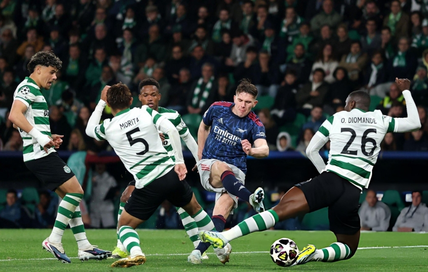
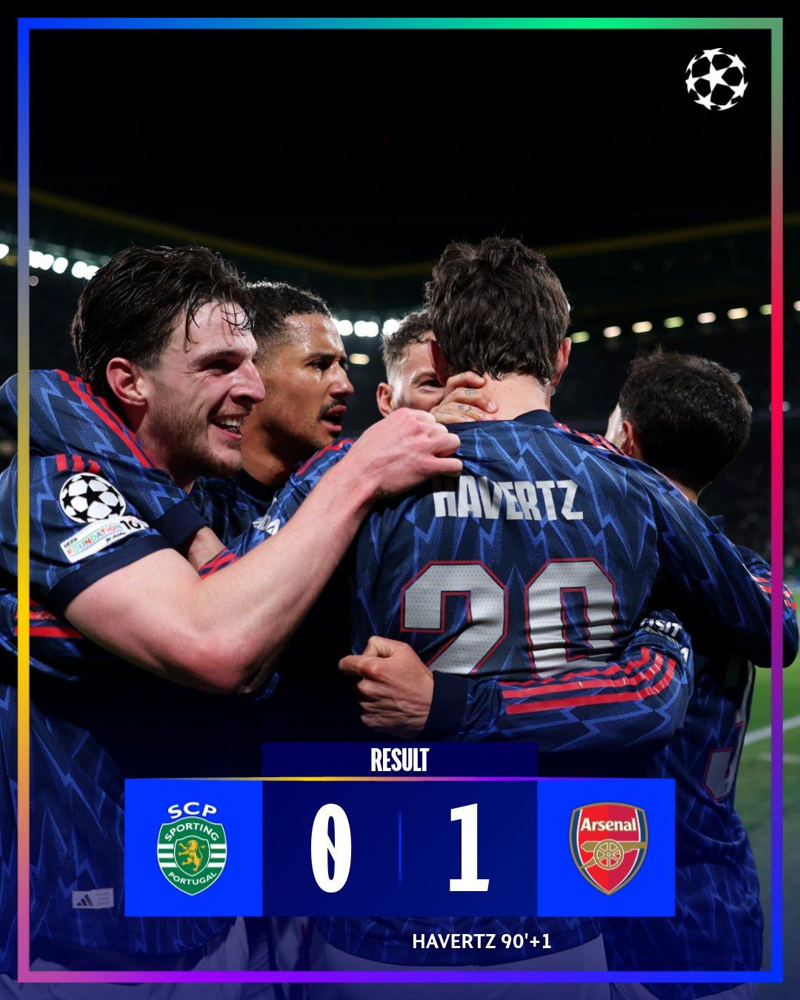
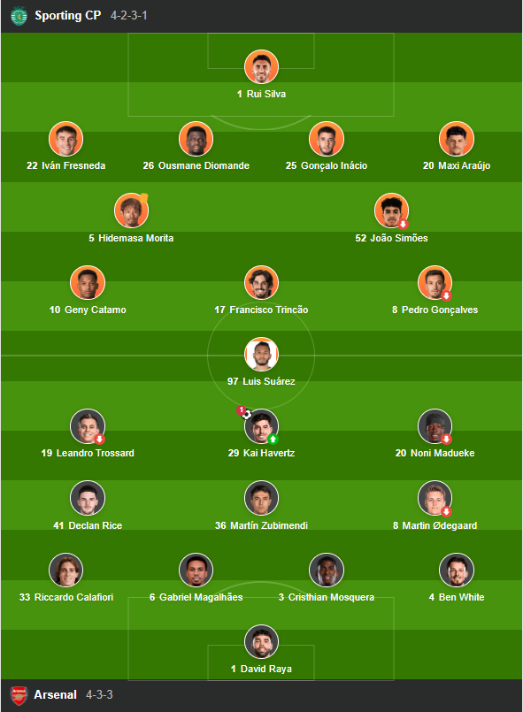

Arsenal giành chiến thắng tối thiểu 1-0 trước Sporting CP trên sân khách, tạo lợi thế quan trọng trước trận lượt về sau màn trình diễn chắc chắn và bản lĩnh.
Vòng tứ kết Cúp C1 châu Âu (UEFA Champions League) bắt đầu từ sáng nay 8/4 với lợi thế thuộc về các đội khách. Trên sân Estádio José Alvalade (Lisbon, Bồ Đào Nha), Arsenal giành chiến thắng 1-0 trước Sporting CP.

kết quả tứ kết lượt đi Cúp C1 châu Âu hôm nay 8/4: Arsenal đánh bại Sporting CP 1-0
Rạng sáng 8/4 (giờ Việt Nam), Arsenal có chuyến làm khách đầy thử thách trên sân của Sporting CP trong khuôn khổ tứ kết lượt đi UEFA Champions League 2025/26. Trận đấu diễn ra đúng tính chất căng thẳng của một màn so tài đỉnh cao, với thế trận giằng co và nhiều cơ hội bị bỏ lỡ.
Sporting CP nhập cuộc tự tin và sớm tạo ra sức ép. Ngay phút 7, cú sút của Maximiliano Araujo đưa bóng dội xà ngang, khiến hàng thủ Arsenal chao đảo. Đội chủ nhà liên tục khai thác tốc độ của các cầu thủ chạy cánh như Geny Catamo, buộc thủ thành David Raya phải làm việc vất vả với nhiều pha cứu thua quan trọng.

Arsenal gặp nhiều khó khăn trước lối chơi áp sát của Sporting CP trong hiệp 1
Sau khoảng thời gian đầu lép vế, Arsenal dần lấy lại thế trận nhờ sự cơ động của Martin Odegaard và Declan Rice. Đội khách cũng có cơ hội đáng chú ý khi Noni Madueke đưa bóng trúng xà ngang từ một tình huống phạt góc.
Bước ngoặt tưởng chừng đến ở phút 63 khi Martin Zubimendi dứt điểm tung lưới Sporting CP. Tuy nhiên, sau khi tham khảo VAR, trọng tài xác định Viktor Gyokeres đã việt vị trong pha bóng trước đó, khiến bàn thắng không được công nhận. Quyết định này khiến các cầu thủ Arsenal không giấu được sự tiếc nuối.
Trong phần còn lại của trận đấu, hai đội tiếp tục tạo ra thế trận ăn miếng trả miếng. Sporting CP gia tăng sức ép ở những phút cuối với hàng loạt cơ hội của Catamo và Luis Suarez, nhưng sự xuất sắc của Raya đã giúp Arsenal đứng vững.
Khi trận đấu trôi về những phút bù giờ, bước ngoặt cuối cùng đã xuất hiện. Phút 90+1, Kai Havertz tận dụng đường kiến tạo của Gabriel Martinelli để dứt điểm chính xác, ghi bàn thắng duy nhất của trận đấu.

Kai Havertz ghi bàn thắng quyết định giúp Arsenal đánh bại Sporting CP 1-0
Chiến thắng tối thiểu 1-0 giúp Arsenal nắm lợi thế trước trận lượt về tại Emirates, trong khi Sporting CP chắc chắn còn nhiều việc phải làm nếu muốn lật ngược tình thế.
Đội hình ra sân
